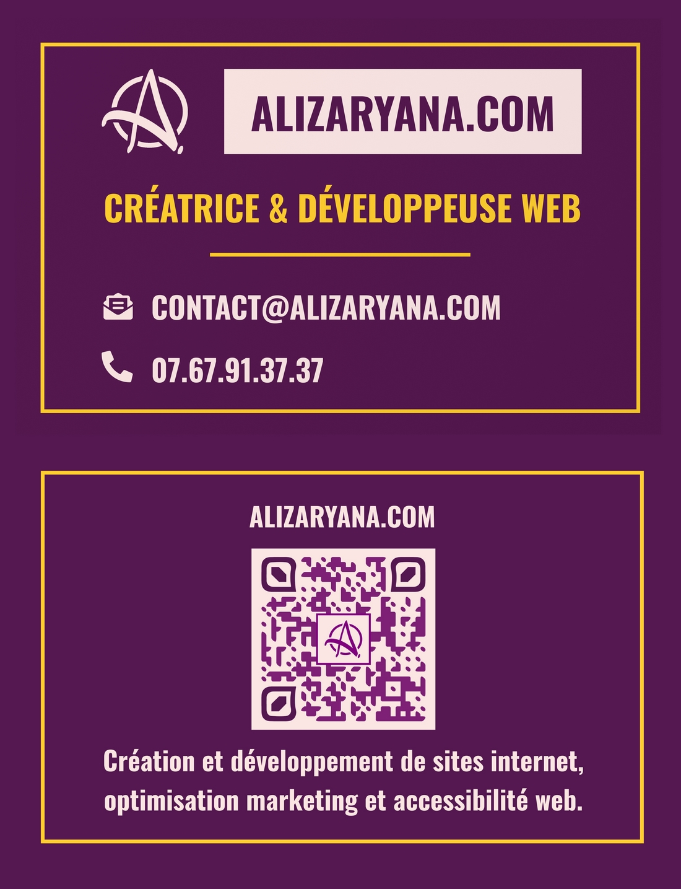

Avec l'entreprise freelance "Alizaryana", située au Creusot, pour le stage en développement web du lundi 11 septembre au vendredi 22 septembre.
Introduction
J'ai découvert "Alizaryana" dans un article du journal de Saône-et-Loire qui mentionnait ses compétences en développement web et la création de son entreprise freelance, travaillant de chez elle.
J'ai choisi cette entreprise pour deux raisons : elle est nouvelle dans ce domaine et elle est située au Creusot. Cela m'a permis de réduire la distance et le temps de mes trajets, car l'entreprise et le DAQ 2.0 m'ont autorisé à faire du télétravail pendant mon stage.
Mes objectifs concernant ce stage étaient de confirmer mon projet et de découvrir les aspects du métier, même si, dans ce cas, il s'agissait d'une entreprise freelance qui ne propose pas exactement le même environnement et les mêmes conditions de travail que certaines grandes entreprises du même domaine.
Ce stage avait également pour but de m'améliorer et d'en apprendre plus sur les langages informatiques HTML et CSS. Ce fut nécessaire, n'ayant pas vu les bases sur la disposition de certaines balises (header, nav, main, article et aside), qui sont pratiquement obligatoires.
Présentation de l’entreprise
"Alizaryana" est une entreprise freelance situé 11 rue des abeilles, au Creusot (71200). Lancé le 1er septembre 2023, cette entreprise gérer par Anaïs Dumont, à pour domaine la création en développement web.
Anaïs avait débuté par des études de commerce, puis commencé à travailler dans le domaine bancaire. Elle a ensuite travaillé dans le domaine de l'écriture. Passionnée par la science et les nouvelles technologies, elle a fini par se tourner vers les métiers du développement web.
Grâce à son diplôme en intégration et développement web et à son professionnalisme, elle propose ses services pour la création et la production de sites internet, ainsi que pour l'optimisation de la performance, du référencement et de l'accessibilité des sites internet.
Les tâches réalisées
Premier semaine
Lundi matin
Veille sur les bonnes pratiques pour le langage HTML5
Lundi après-midi
Début de création du CV avec du code HTML
Les balises utilisées sont :
Début d'un jeu pour apprendre à utiliser Flexbox en CSS
Les éléments utilisés sont :
Mardi matin
Veille sur les outils "GitHub" et "CodePen"
Mardi après-midi
Ajout du contenu du CV + fin du jeu pour apprendre à utiliser Flexbox en CSS
Les balises utilisées sont :
(Placez la souris sur une balise pour voir son utilité)
Mercredi matin
Veille sur le langage CSS
Mercredi après-midi
Début d'utilisation du CSS pour le CV, utilisation de Flexbox
Les éléments utilisés sont :
Jeudi matin
Modification de la feuille de style du cv et remplacement des éléments suivant
<ul> et <li> par <p> et <a>
Début d'un deuxième jeu pour apprendre à utiliser Flexbox en CSS
Les éléments utilisés sont :
Jeudi après-midi
Veille sur les éléments de la balise head + suite du deuxième jeu pour apprendre à utiliser Flexbox en CSS
Les balises utilisées sont :
Vendredi matin
Ajout de toutes les balises meta et link nécessaires au code HTML du CV
Veille sur les extensions de Visual Studio Code
Les extensions sont :
Deuxième semaine
Lundi matin
Modification du HTML et CSS du CV
Utilisation de <form>, <summary>, <details> et <img>
Lundi après-midi
Exercice pour disposer des images sur une page en utilisant Flexbox en CSS
Mardi matin
Modification du cv en html et css, positionnement de petit icones pour les summary et contacts
Mardi après-midi
Modification du cv en html et css, application des couleurs dans le code CSS
Mercredi matin
Création de petite animation pour les icones situé à coté des summary.
Éléments utilisés
Mercredi après-midi
Modification des couleurs du CV (dégradés)
Jeudi matin
Modification générale + couleurs pour l'apparence du CV.
Jeudi après-midi
Création de la version responsive du CV en CSS (adaptation du CV pour les téléphones et les tablettes en général).
Vendredi matin
Finition et correction de certains éléments de la version responsive du CV.
Résumé des deux semaines et de ce qui a été appris et vu.
Prise d'informations pour le rapport de stage
Conclusion
Ce stage m'a permis de revoir les bases et de me perfectionner. Ainsi, je souhaite continuer sur cette voie avec le métier de développeur web et web mobile.
Je pense qu'il serait nécessaire de faire un deuxième stage dans une entreprise où les conditions et environnements de travail sont différents de ceux précédemment.
Je maintiens mon choix de suivre la formation WebForce3 au mois de mars au Creusot (12 Rue de la Fonderie). Dans le cas où je ne serais pas accepté en raison de la pré-sélection et / ou du nombre de places (12 places maximum), je verrai s'il est possible de suivre une formation en ligne ou autre.
Pour ma remise à niveau, il m'a été fortement conseillé d'apprendre / améliorer mon anglais, car les langages informatiques utilisent parfois cette langue. De plus, dans le cas où des clients viendraient à ne pas parler la langue française, il serait nécessaire de maîtriser un certain niveau d'anglais.
Remerciements
Je tiens à vous exprimer ma gratitude pour m'avoir accueilli en stage au sein de votre entreprise de développement web. Cette expérience a été très enrichissante pour moi.
J'ai pu travailler aux côtés d'une professionnelle, ce qui m'a permis de revoir, d'apprendre de nombreuses choses et de mettre en pratique mes connaissances. Votre accueil et votre gentillesse m'ont permis de me sentir à l'aise tout au long du stage.
Je repars de ce stage avec une meilleure compréhension du domaine du développement web, et je suis déterminé à continuer à progresser dans cette voie.
Merci encore de m'avoir accepté en stage. Je garde un excellent souvenir de mon temps passé chez Alizaryana.
Annexes
Ce renard est présent sur le site Alizaryana
Carte de visite de Alizaryana disponible au téléchargement sur son site https://www.alizaryana.com/
Flyer de Alizaryana disponible au téléchargemnt sur son site https://www.alizaryana.com/
Site recommendés :
https://www.landingfolio.com/ : On peut voir quelles sont les couleurs utilisées le plus souvent sur les CV du moment.
https://cssgradient.io/ : Permet de faire un dégradé de couleur ; un code est généré pour l'insérer dans un document HTML.
https://encycolorpedia.fr/244a68 : Permet de voir des variantes de la couleur en l'écrivant dans la barre de recherche au format Hex(a).
https://fr.freepik.com/search?format=search&query=dev%20web : Site d'images, d'icônes et de vidéos libres de droits.
https://validator.w3.org/#validate_by_uri : Permet de vérifier son code HTML, détecte les erreurs de balisage, etc.
https://caniuse.com/ : Permet de vérifier si une balise ou un élément est fonctionnel sur différents navigateurs d'ordinateur et de téléphone.
https://cssgenerator.org/box-shadow-css-generator.html : Générateur de code CSS correspondant à l'ombre personnalisée par rapport à un élément.